Core question
低 Ron 與 E-mode 如何同時成立
碩士專案的目標是用 GaN FinFET 結構做到低導通電阻，同時維持 E-mode。我把它拆成材料、元件與製程三條線：材料端處理多通道磊晶的 2DEG 與 Qg，元件端處理 Wfin、tox 與 Al 組分造成的 Vth–Ron 取捨，製程端拆成 Fin 關鍵測試與 p-GaN 元件開發，每條線都有可量測的輸出與決策節點。
TCAD · AI Data Analytics · Device Topology · Process Integration · PFA / EFA
Hey，我是陳秉佑（Ping Yu-Chen / Bill Chen），中央大學電機所固態組碩士生，指導教授為綦振瀛教授；大學畢業於西安交通大學微電子科學與工程。我的主軸是 TCAD：以 Sentaurus 建立 GaN 與 SiC 功率元件模型，先在模擬裡把元件想清楚；其次是用 AI 做數據趨勢分析與元件結構拓撲的探索，從大量模擬中找出真正的主導因子；第三是製程：在無塵室親手完成 EBL 微影、ICP-RIE 蝕刻、PECVD、E-gun 鍍膜與 lift-off，並用 FIB、FE-SEM 與 B1500A 做形貌與電性分析。
我喜歡用 Python 把製程 recipe 和 PFA（形貌）、EFA（電性）數據串在一起，從 DOE 結果整理出可執行的 design rule 與製程窗口。大學時也完成類比與數位 IC 的電路與版圖設計，能把元件特性連結到電路端的需求。
研究興趣
研究關鍵字 · 點擊直接跳到對應投影片
元件研究
Core question
碩士專案的目標是用 GaN FinFET 結構做到低導通電阻，同時維持 E-mode。我把它拆成材料、元件與製程三條線：材料端處理多通道磊晶的 2DEG 與 Qg，元件端處理 Wfin、tox 與 Al 組分造成的 Vth–Ron 取捨，製程端拆成 Fin 關鍵測試與 p-GaN 元件開發，每條線都有可量測的輸出與決策節點。
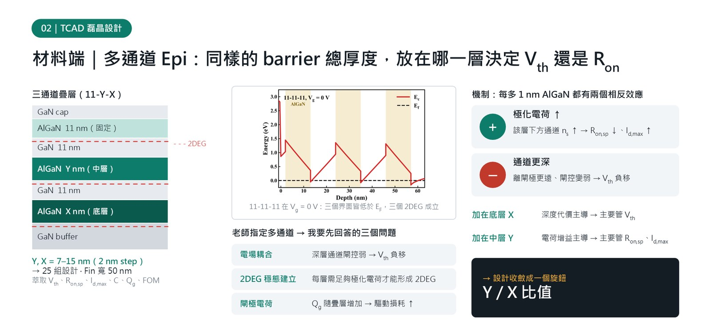
Epitaxy · IEDMS 2026
多通道結構在每個 AlGaN/GaN 介面形成 2DEG，並聯後降低 Ron，但深層通道閘控較弱、Vth 容易負移。我固定上層 barrier 為 11 nm，中層 Y 與底層 X 從 7 到 15 nm、每 2 nm 一步，共 25 組設計；能帶確認三個介面都低於費米能階，三個 2DEG 都能成立。
機制：每增加 1 nm AlGaN 會同時增加極化電荷、也讓通道變深。加在底層 X 時深度代價主導，主要影響 Vth；加在中層 Y 時電荷增益主導，主要改善 Ron 與電流。
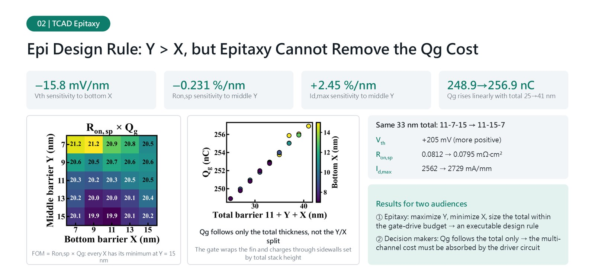
Epitaxy · IEDMS 2026
底層 X 每增加 1 nm，Vth 約負移 15.8 mV；中層 Y 增加時 Ron,sp 下降、Id,max 上升；Qg 只隨總厚度線性上升。同樣 33 nm 總厚度下，把 8 nm 從 X 移到 Y，Vth 正移約 205 mV，Ron,sp 與 Id,max 同時改善。
交付給材料端的規則：Y 盡量大、X 盡量小，再依 gate-drive 預算決定總厚度；Qg 的驅動代價則需要由電路端承擔。
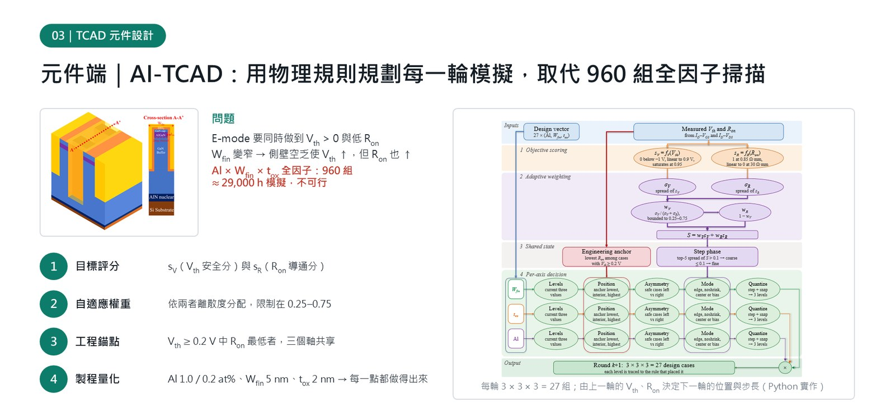
TCAD × AI · IWN 2026
元件端的三個參數是 Wfin、tox 與 Al 組分。全因子掃描需要 960 組、約 2.9 萬小時，實際上不可行。我用 Python 建立 physics-guided 專家系統：以 Vth 安全分與 Ron 導通分評分、依離散程度調整權重、以 Vth ≥ 0.2 V 且 Ron 最低的點作為工程錨點，再把建議點對齊可製造的 Al / Wfin / tox 步長。
每輪只跑 27 組，每個點都能追溯是哪一條規則選出來的，模擬因此可以被稽核與重現。
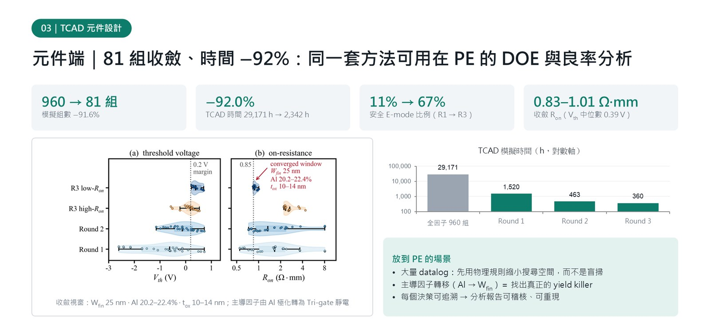
TCAD × AI · IWN 2026
三輪共 81 組，比全因子少 91.6%；依模擬 log，總時間由 29,171 小時降到 2,342 小時。安全 E-mode 比例從第一輪的 11% 提升到第三輪的 67%，收斂到 Wfin 25 nm、Al 20.2–22.4%、tox 10–14 nm，Ron 0.83–1.01 Ω·mm。
一開始是 Al 極化主導全域 tradeoff；Al 收斂後，低 Ron 分支全部集中在 Wfin 25 nm，主導因子轉為 Trigate 靜電控制。
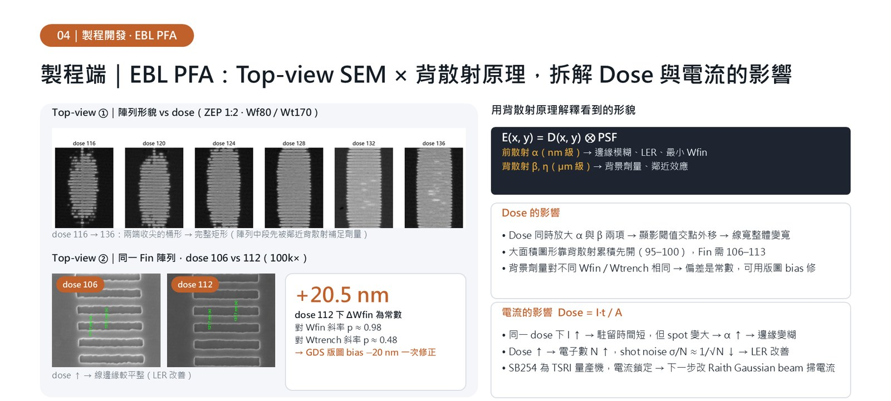
Process · EBL PFA
用 EBL dose matrix 找窗口：90–94 欠曝，106–113 是 Fin 可用窗口、其中 106–110 最穩定，114 以上開始橋連與線塌。在 dose 112 下，Fin 實測寬度比設計值多約 20.5 nm，而且與 Wfin、Wtrench 沒有顯著斜率。
這是近似常數的偏差，最有效的處理不是逐一補償每種圖形，而是在 GDS 端統一 bias 約 −20 nm。
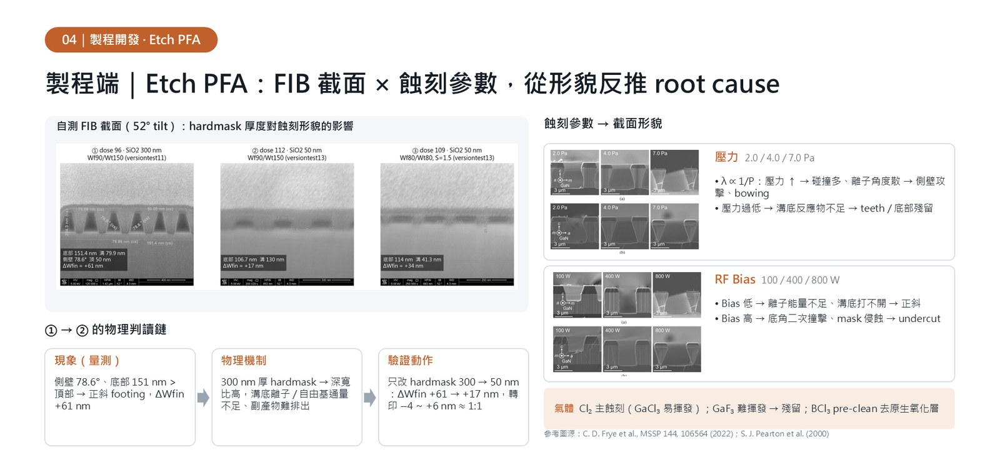
Process · Etch PFA
使用 300 nm SiO2 hardmask 時，截面底部出現明顯 footing，偏差約 +61 nm；降到 50 nm 後轉印偏差只剩 −4～+6 nm，接近 1:1，代表主要偏差來自微影而非 GaN 蝕刻。壓力與 RF bias 的截面對照則用來判斷 bowing、teeth、undercut 等形貌的成因。
判讀原則：顯影後就變形先修 EBL；蝕刻後才變形查 hardmask 與 etch；俯視正常但截面異常，優先檢查 pressure 與 bias，每次只改一個旋鈕。
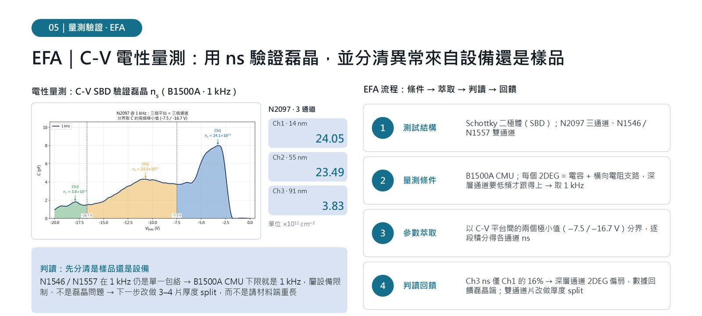
Measurement · EFA
多通道 SBD 中每個 2DEG 像一個電容加橫向電阻支路，深層通道需要較低頻率才跟得上。N2097 在 1 kHz 成功分出三個通道，萃取 ns 分別為 24.05、23.49 與 3.83 × 10¹¹ cm⁻²。
N1546 / N1557 在 1 kHz 仍是單一包絡，但 B1500A CMU 的頻率下限就是 1 kHz，因此先判定為量測解析度不足；下一步用厚度 split 樣品驗證，而不是直接要求重長磊晶。
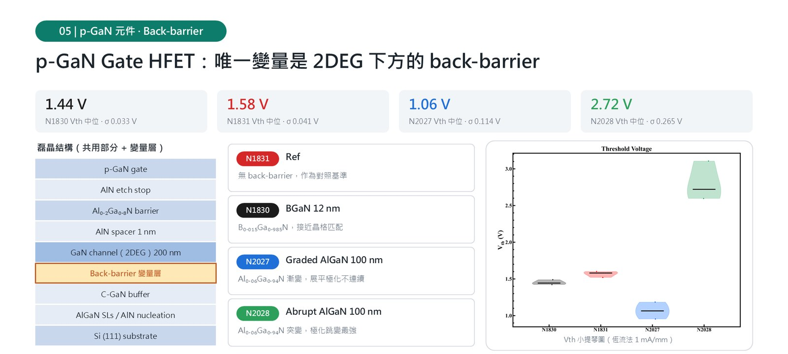
p-GaN HFET · Back-barrier
四片樣品共用 p-GaN gate、AlN etch stop 與 Al0.2Ga0.8N barrier，只改變 GaN channel 下方的 back-barrier：N1831 無 back-barrier 作對照，N1830 為 12 nm BGaN，N2027 為 100 nm 漸變 AlGaN，N2028 為 100 nm 突變 AlGaN。以 B1500A 量測 ID-VG / ID-VD，Python 流程用恆流法（1 mA/mm）萃取 Vth，並取多次量測的中位數。
Vth 中位數：N2028 最高 2.72 V，但均勻性最差（σ 0.265 V）；N1830 為 1.44 V、σ 僅 0.033 V，BGaN 對溝道的調控最穩定；N2027 為 1.06 V，已接近 E-mode 的 1 V 邊界。
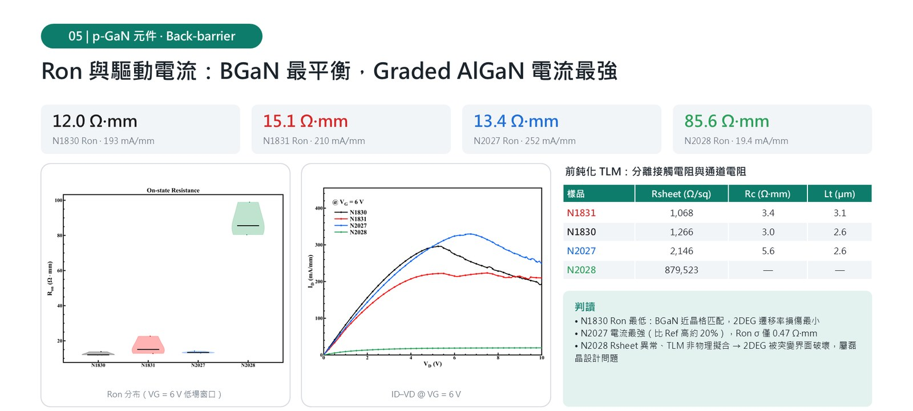
p-GaN HFET · Ron & TLM
在 VG = 6 V 的低場窗口萃取 Ron：N1830 最低 12.0 Ω·mm；N2027 電流最強 252 mA/mm（比 Ref 高約 20%），Ron σ 僅 0.47 Ω·mm；N2028 的 Ron 高達 85.6 Ω·mm，電流只有 19.4 mA/mm。
鈍化前 TLM 把 Ron 拆成接觸與通道兩部分：N2028 的方塊電阻異常、TLM 擬合不符物理，確認問題來自突變界面破壞 2DEG 的磊晶設計，而不是表面或製程。
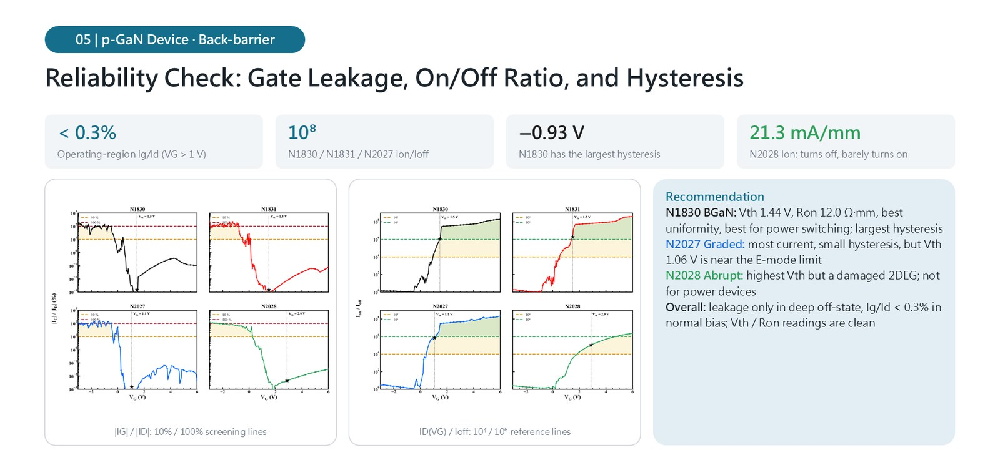
p-GaN HFET · Reliability
以 |IG|/|ID| 的 10% / 100% 門檻檢查轉移曲線品質：漏電只集中在深關斷區，正常偏置下 Ig/Id < 0.3%。N1830、N1831、N2027 的 Ion/Ioff 都達 10⁸；N2028 的比值雖超過 10⁶，但 Ion 只有 21.3 mA/mm，屬於「關得住、開不強」。所有樣品都是負向遲滯，N1830 最大（−0.93 V）。
路線建議：N1830（BGaN）最平衡、最適合功率開關，但要追蹤遲滯；N2027 驅動最強，但 Vth 接近 E-mode 下限；N2028 不建議沿用於功率元件。
Undergraduate thesis · A+
以 Sentaurus 從工藝與結構仿真出發，分析 300–1000 K 下 VDMOS 的 Vth、Ron、擊穿電壓與反向恢復；再自建高溫測試平台，量測商用 1200 V SiC MOSFET 在 24–300 °C 的靜態與動態特性，用量測回頭驗證仿真趨勢。
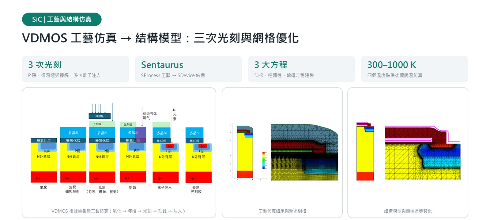
SiC · Process & Structure
以 Sentaurus 走過 VDMOS 的製造流程：外延、P 阱與柵源極需要三次光刻與反覆的離子注入，關鍵工藝節點的仿真輸出用來檢驗整個流程；再把工藝結果帶入結構仿真，以泊松、連續性與輸運方程建模。
結構仿真時把柵極區等勢化、忽略 Al 淀積區：這兩區不影響基本特性，卻會大幅增加網格密度與算力，簡化後讓後續 300–1000 K 的特性仿真更快、更容易收斂。
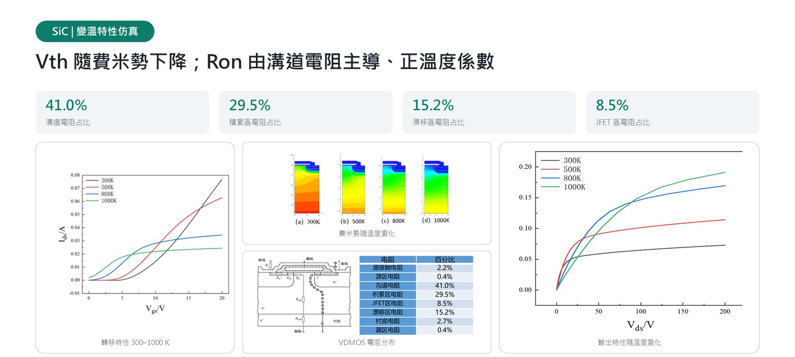
SiC · TCAD 300–1000 K
柵氧約 50 nm、摻雜可調範圍有限，因此 Vth 隨溫度的變化主要由費米勢決定：溫度升高、費米勢下降，Vth 隨之降低。導通電阻拆分後，溝道電阻占 41.0%、積累區 29.5%、漂移區 15.2%、JFET 區 8.5%。
溫度升高使載流子遷移率下降、溝道電阻上升，完全導通時總 Ron 呈正溫度係數，與導通電阻的熱依賴特性相符。
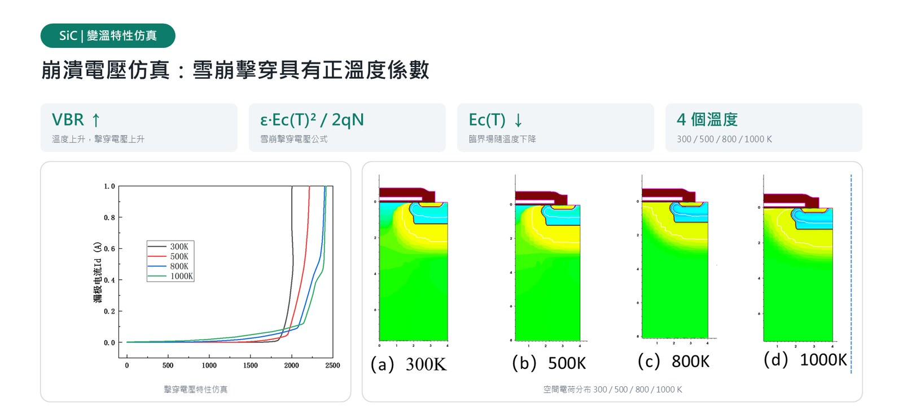
SiC · TCAD 300–1000 K
在 300、500、800、1000 K 下仿真擊穿特性與空間電荷分布：溫度上升，擊穿電壓跟著上升。依雪崩擊穿公式 VBR ≈ ε·Ec(T)² / 2qN，搭配空間電荷分布觀察電荷累積的變化。
晶格振動增強使載流子與晶格碰撞損失的能量增加、電場累積能量變慢，因此需要更高的電壓才會發生雪崩擊穿。
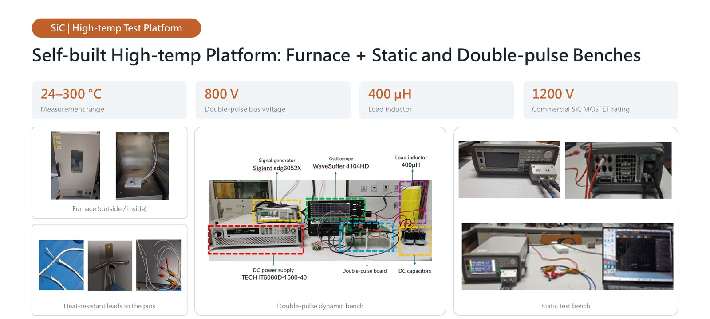
SiC · Test platform
用加熱爐提供 24–300 °C 的環境，以玻璃纖維耐熱線與夾具把元件引腳引出爐外，分別接到靜態特性量測平台，以及由信號發生器、示波器、直流電源與 400 µH 負載電感組成的雙脈衝動態測試平台（800 V）。
在不破壞商用 1200 V SiC MOSFET 封裝的前提下，同一顆元件就能完成高溫靜態與動態特性量測。
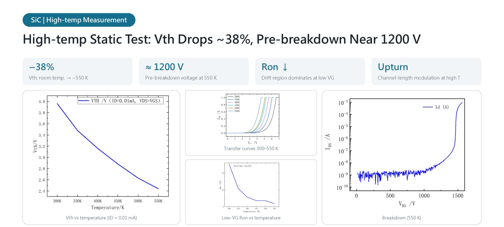
SiC · Static measurement
從室溫到約 550 K，Vth 下降約 38%，受封裝方式影響，量測上仍呈近似線性的趨勢。溫度越高，飽和區受溝道長度調製影響而上彎；低柵壓下溝道未完全開啟，Ron 由漂移區主導、隨溫度下降。550 K 下擊穿前電壓接近 1200 V。
擊穿前曲線的抖動來自高溫下載流子熱激發造成的漏電流隨機漲落、封裝局部溫度不均，以及量測極低電流時的雜訊，而不是元件失效。
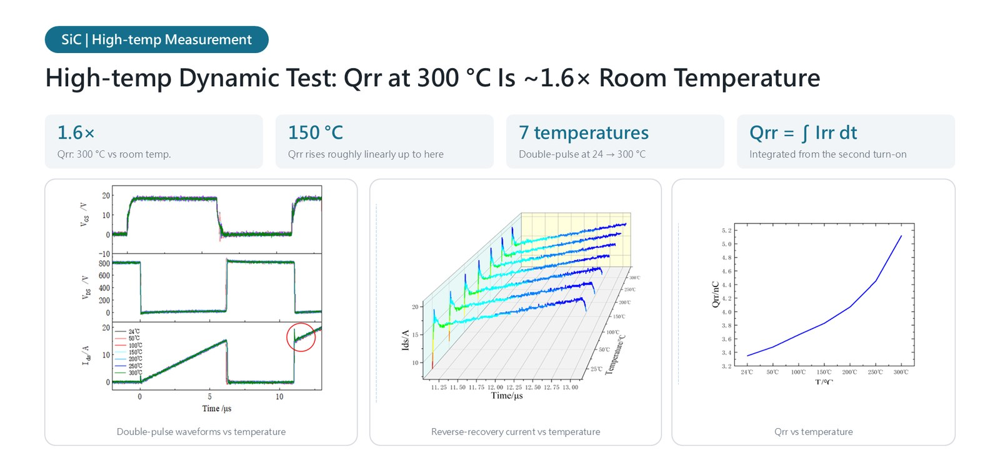
SiC · Dynamic measurement
在 24–300 °C 七個溫度點做雙脈衝測試，由二次開通時的反向恢復電流積分得到 Qrr。150 °C 的常規工作溫度內，Qrr 近似線性上升；進入極端高溫後快速上升，到 300 °C 時約為常溫的 1.6 倍。
體二極體的反向恢復與寄生電容、開關變化率有關；高溫應用需要重新評估開關損耗與驅動設計。
論文發表
兩篇都是碩士研究整理成的第一作者會議論文：IWN 2026 用 AI 輔助 TCAD，加快 E-mode GaN FinFET 的參數設計；IEDMS 2026 則從 25 組模擬整理出多通道 AlGaN/GaN 結構的 barrier 厚度設計規則。
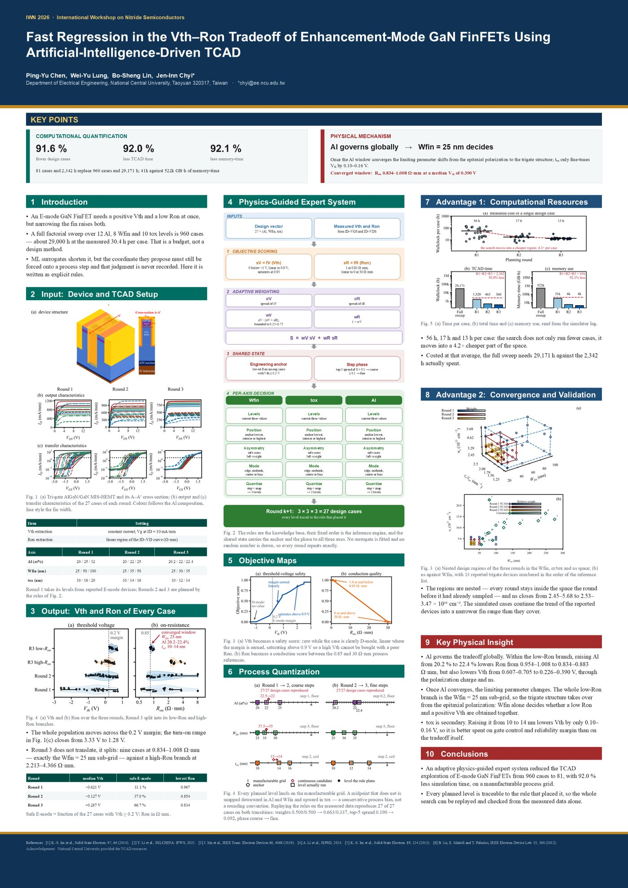
查看海報IWN 2026 · 日本熊本 · Poster · 第一作者
E-mode GaN FinFET 必須同時取得正 Vth 與低 Ron。我用 Python 建立 physics-guided 專家系統：以 Vth 安全分與 Ron 導通分評分、依離散度調整權重，並把每個建議點對齊可製造的 Al / Wfin / tox 步長；每輪 27 組，每一點都能追溯是哪條規則選出來的。
關鍵發現：Al 組分主導全域 tradeoff；收斂後主導因子轉為 Trigate 靜電控制，Wfin = 25 nm 決定能否同時得到低 Ron 與正 Vth（Ron 0.834–1.008 Ω·mm，Vth 中位數 0.390 V）。
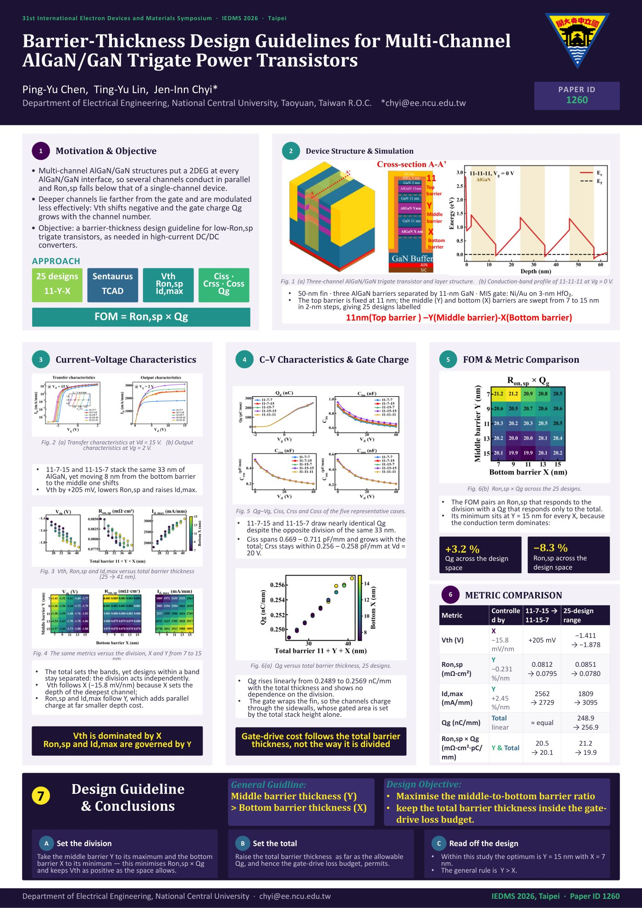
查看海報IEDMS 2026 · 台北 · Poster · 第一作者 · Paper ID 1260
多通道結構讓每個 AlGaN/GaN 介面都形成 2DEG 以降低 Ron,sp，但深層通道的閘控較弱。我固定上層 barrier 為 11 nm，掃描中層 Y 與底層 X（7–15 nm）共 25 組設計，萃取 Vth、Ron,sp、Id,max、電容與 Qg。
關鍵發現：X 決定最深通道的閘控與 Vth；Y 以較小的深度代價增加並聯電荷，主導 Ron,sp 與 Id,max；Qg 只隨總厚度變化。設計規則是 Y 盡量大、X 盡量小，再依 gate-drive 損耗預算決定總厚度。
其他研究產出 “Blockchain-based Decentralized Co-governance for Sustainable Crowdfunding.” · arXiv Preprint · 第一作者
電路設計
大學 VLSI 專題中，我完成了兩個積體電路的全流程設計，一個數位、一個類比，皆以 Cadence 從規格走到版圖與驗證。
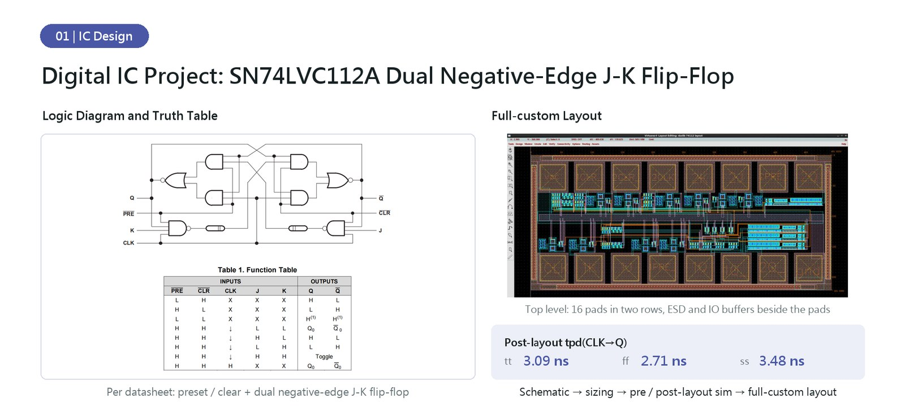
Digital · Full-custom
依 datasheet 規格設計帶預置與清除的雙負緣觸發 J-K 正反器。我負責電路原理圖、大部分電晶體尺寸設計、部分模擬測試與參數量測，以及整體版圖設計（工作量約 65%）。版圖按封裝排成兩排 16 個 PAD，ESD 保護與 IO buffer 緊鄰 PAD 放置。
前後模擬都跑 tt / ff / ss 三種工藝角：後模擬 tpd(CLK→Q) 為 3.09 / 2.71 / 3.48 ns，並以最差工藝角驗證 VOH / VOL、VIH / VIL 與漏電流。
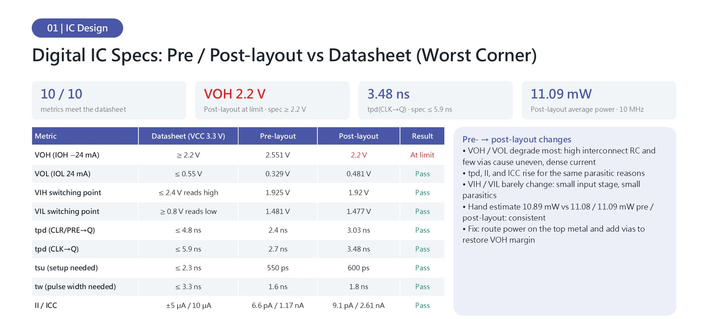
Digital · Spec analysis
以最壞工藝角（VOH / VOL、VIH / VIL、tpd 取 ss，II / ICC 取 ff）逐項對照 SN74LVC112A datasheet（VCC 3.3 V）：10 項指標全部符合，後模擬 tpd(CLK→Q) 3.48 ns（規格 ≤ 5.9 ns）、VOL 0.481 V（規格 ≤ 0.55 V）。唯一壓線的是 VOH：後模擬剛好 2.2 V，等於規格下限。
前後模擬的差異可以追溯到版圖寄生：連線電容電阻偏大、通孔偏少，使 VOH / VOL 與 tpd 退化最多；改進方向是電源線改用頂層金屬並增加通孔，把 VOH 拉回裕量。
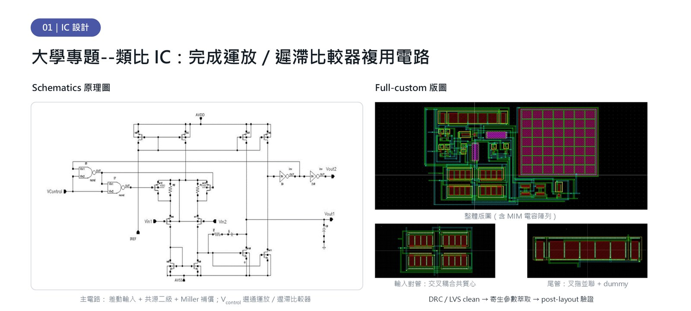
Analog · Schematic & Layout
兩人一組的類比 IC 專題，我負責可在運放與遲滯比較器之間切換的複用電路：差動輸入 + 共源二級 + Miller 補償，以 Vcontrol 選通運放或遲滯比較器，另含能隙基準。工作包含電路分析、前模擬，以及 DRC、LVS 與 post-layout 驗證。
版圖上輸入對管採交叉耦合共質心、尾管叉指並聯加 dummy，最後完成 DRC / LVS clean、寄生參數萃取與後模擬。
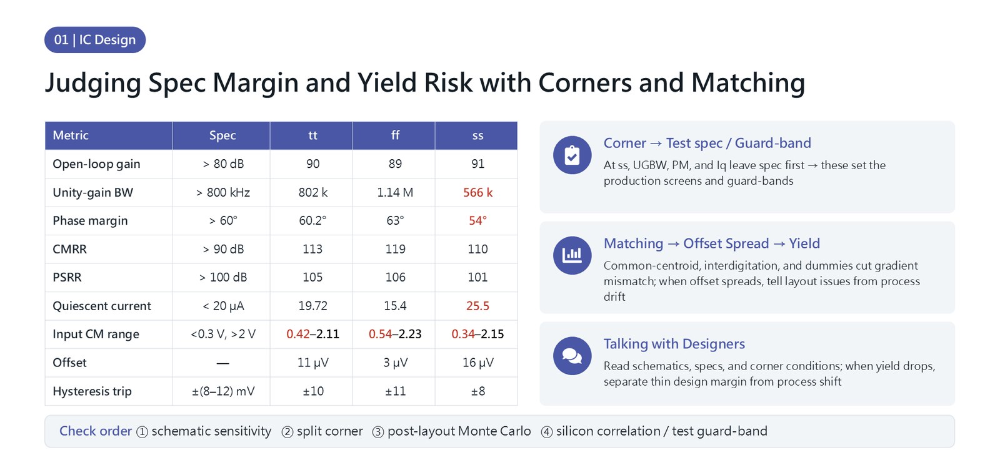
Analog · Corner & Spec margin
tt / ff / ss 結果可分出三種失效：UGBW 與 PM 只在 ss 同時下降，先懷疑 gm 與補償網路對 slow device 過度敏感；ss 下靜態電流升到 25.5 µA 但頻寬反而下降，不能單純加電流，要回查能隙基準與 bias mirror ratio；輸入共模下限在三個 corner 都超標，屬於結構性 headroom 不足，應先修設計。
判讀原則：全 corner 都失效先修設計；單一 corner 失效再拆 process sensitivity，最後用 silicon data 做 model-to-silicon correlation，再決定 test spec 與 guard-band。
工具專利
我喜歡把能提升研究效率的想法實作成工具：Runcard Builder 把製程步驟整理成結構化的 run card，Real-time GaN Industry Intelligence 追蹤 GaN 產業動態，Literature Manager 系統化整理 GaN 近 5 年頂刊頂會的文獻與閱讀筆記。另一方面，大學時結合創業社團的經歷，我深入了解創業團隊在募資與協作上的挑戰，因此開發了仕集區塊鏈眾籌系統，並申請了演算法專利。
Railway · GaN intelligence
追蹤 GaN 產業新聞、論文、公司動態與市場資訊，用來維持研究方向感。
前往網站Process · Runcard
製程 Runcard 生成工具，把晶圓製程步驟整理成結構化 step card，並支援匯出。
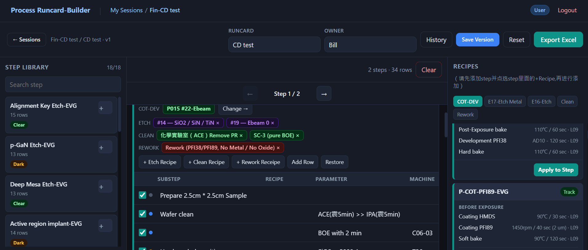
Local tool · Literature
本機文獻整理工具，用來管理論文、主題、筆記和閱讀狀態。
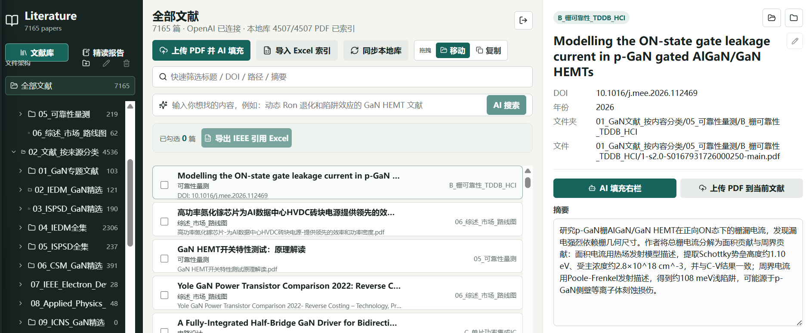
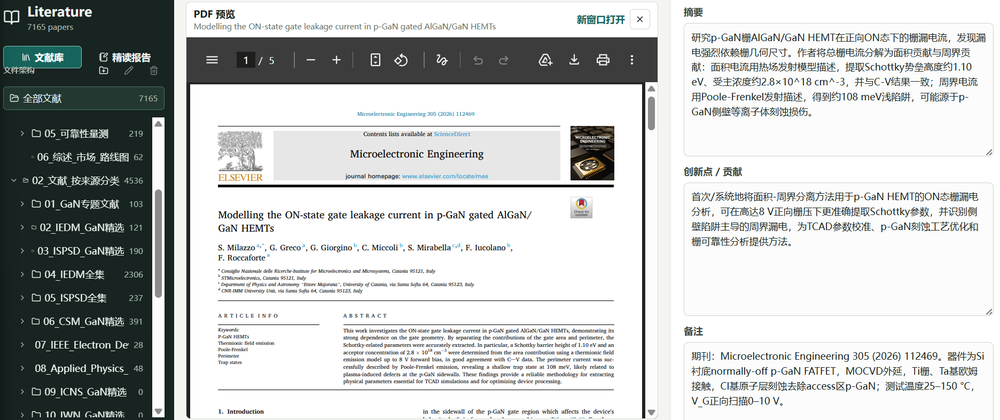
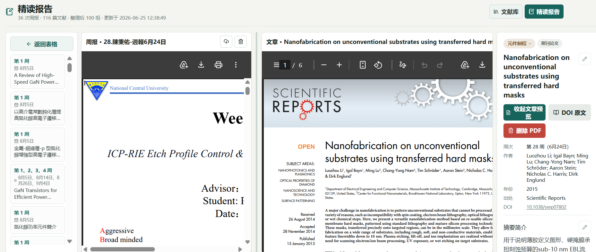
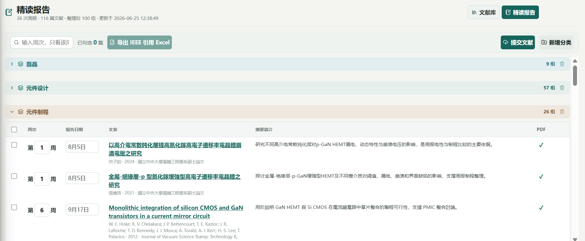
Patent · Blockchain
Patent · Blockchain
Patent · Blockchain
經歷獎項
除了目前的元件研究，我也實戰過工業工程生產管理基本方法、認識SMT封測技術、區塊鏈工作室創建，以及學生創業社團的活動規劃。這些經歷讓我更習慣把技術放在實用產業可行性的角度思考。
Summer Management Trainee Internship
參與 Summer Management Trainee Internship，學習 SMT 封測生產流程與關鍵站點功能，整理價值流與標準工時資料，並以精益生產方法製作專案管理報表。
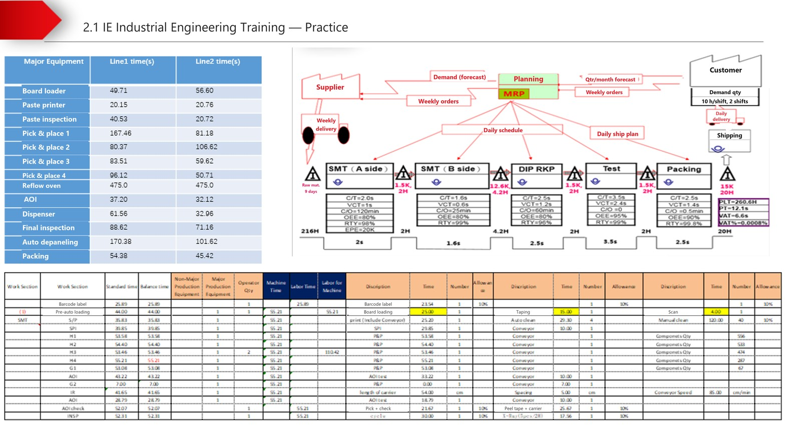
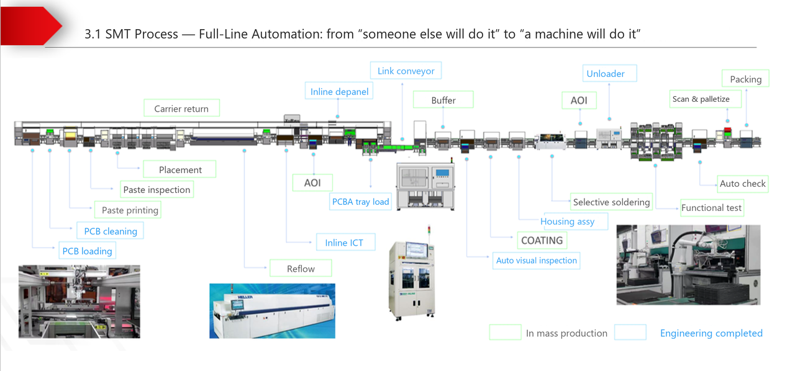
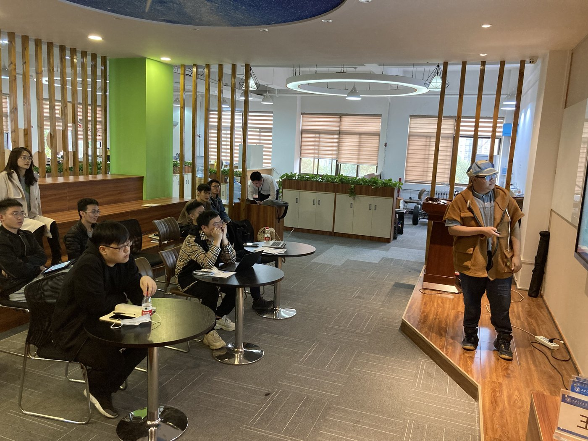
Blockchain · Founder · Frontend
作為工作室創辦人，我負責區塊鏈底層系統架構、共識演算法開發，以及 UI 設計與前端 JavaScript 框架搭建。這段經歷讓我很早就開始把技術實作、產品呈現和團隊溝通放在一起做。
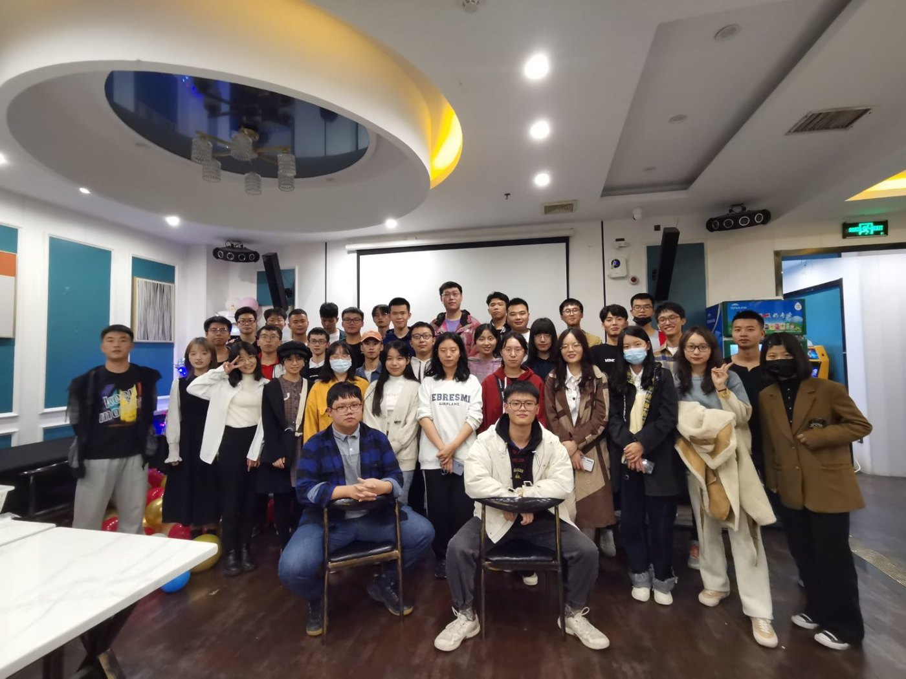
Student Association · Events
擔任協會會長兼社團副主席期間，我參與創新創業講座與論壇規劃，邀請創業校友交流，也協助行政執行與學生創新創業計畫活動。
Awards
生活紀錄
旅行、朋友、城市、山路和拼模型，都是我認識世界的方式。
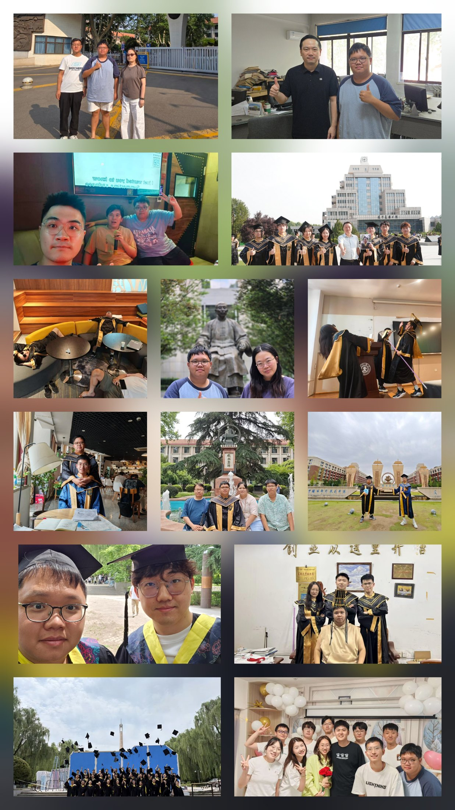
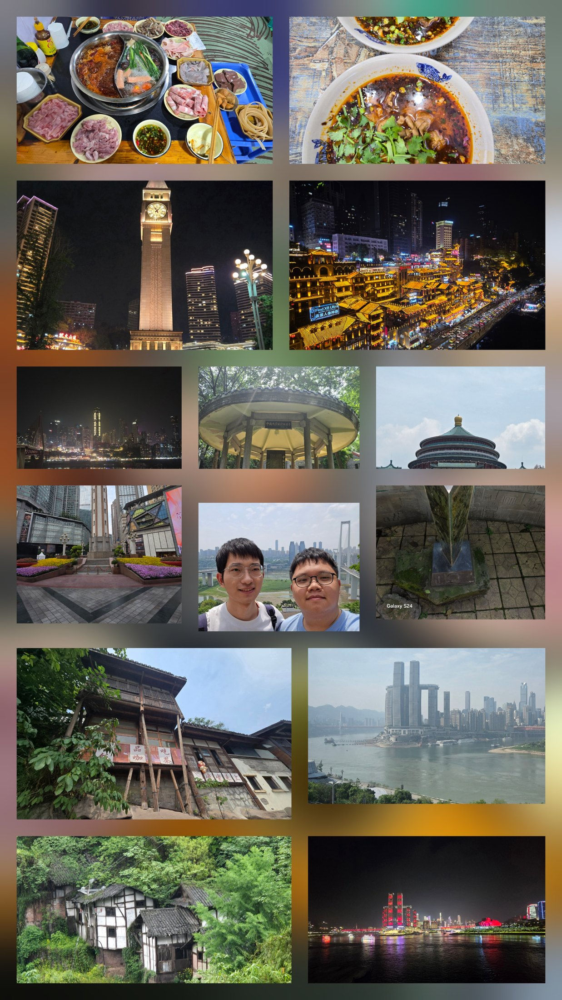
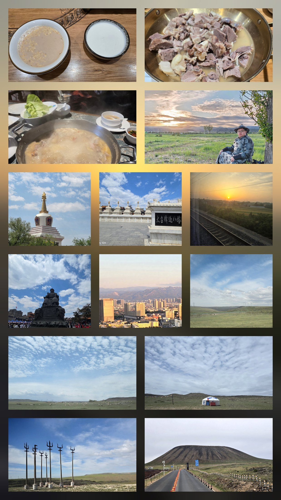
聯絡方式
如果你也在做 TCAD、AI 數據分析與元件拓撲研究，或 GaN / SiC 功率半導體研究，歡迎聯絡我。